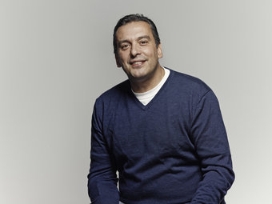

About Christos
Christos Tsiolkas is the author of five novels: Loaded, which was made into the feature film Head-On, The Jesus Man and Dead Europe, which won the 2006 Age Fiction Prize and the 2006 Melbourne Best Writing Award. He won Overall Best Book in the Commonwealth Writers' Prize 2009, was shortlisted for the 2009 Miles Franklin Literary Award, longlisted for the 2010 Man Booker Prize and won the Australian Literary Society Gold Medal for his novel, The Slap, which was also announced as the 2009 Australian Booksellers Association and Australian Book Industry Awards Books of the Year. He is also a playwright, essayist and screen writer. He lives in Melbourne.
Christos' latest novel is Barracuda, which was published here and in the UK to rave reviews in late 2013 and became an instant bestseller.
'Everything we now know about what makes for a good life tells us that those who have the confidence to try without fear of failure and to recover from failure are those who will have notable achievements, not to mention the equilibrium necessary for successful relationships. So don't teach your children to win, teach them to live, by teaching them how to fail.'